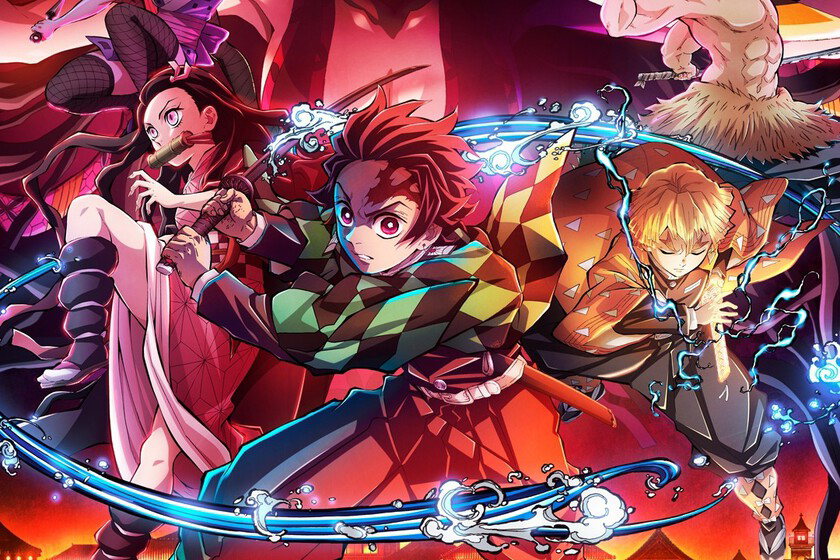

Kimetsu no Yaiba
Kimetsu no Yaiba, también conocida bajo su nombre en inglés Demon Slayer, o en español Guardianes de la Noche es una serie de manga escrita e ilustrada por Koyoharu Gotōge, cuya publicación comenzó el 15 de febrero de 2016 en la revista semanal Shūkan Shōnen Jump de la editorial Shūeisha.